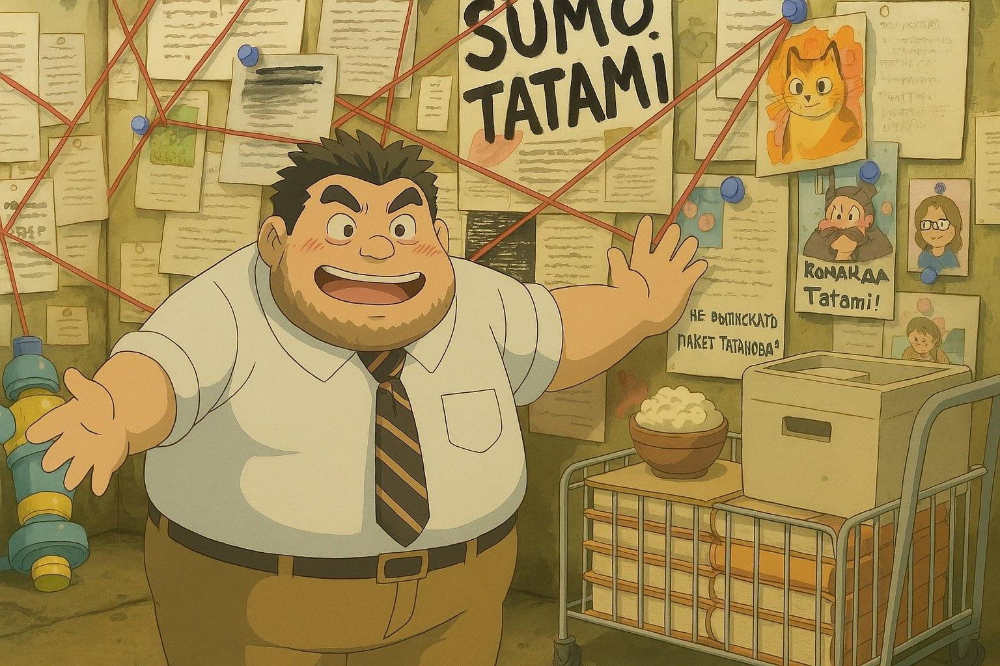
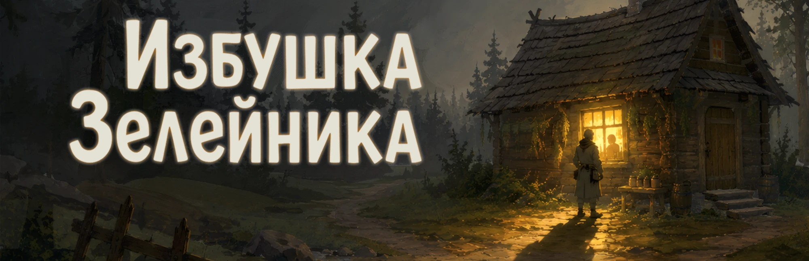
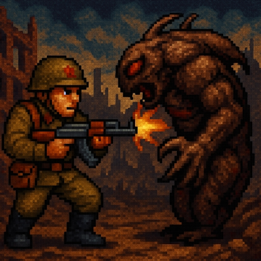
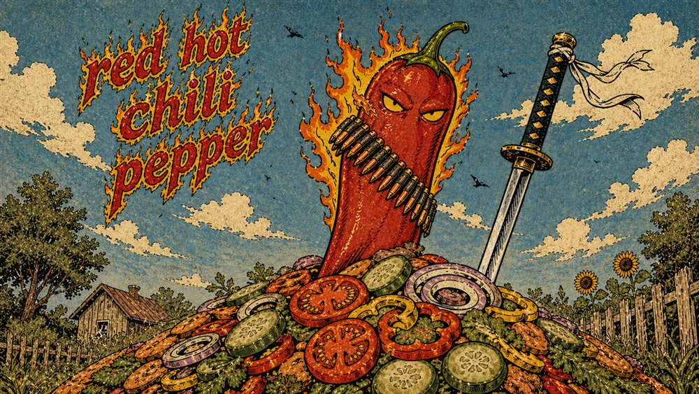
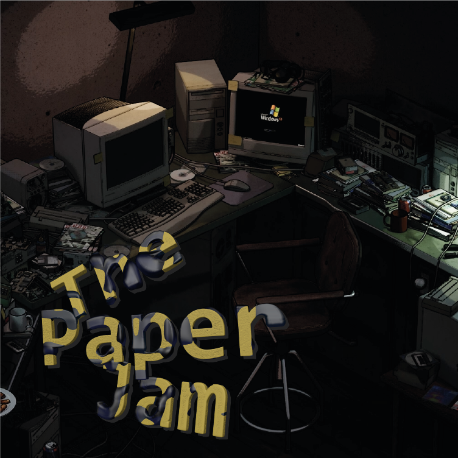

2025–2026Unity · C# · Zenject
Crazy Barbarian Games — Tactical Card Roguelike
- Entity FSM
- Auto-Battle
- Entity Abilities
- Player Abilities
- Placement & Camera
- Level Select Map
- Cards & Economy
- Events & Dialogs
- Animation System
- Tag System
- Architecture
- Editor Tooling
UnityC#ZenjectScriptableObjectEditor toolsDOTween
2024–2025Unity · C# · Netcode
SUMO TATAMI

UnityC#NetcodeClient-Side PredictionReconciliationPing Compensation
2025–2026Unreal Engine 5 · C++ · HLSL
Избушка Зелейника (The Herbalist's Hut)

- Interactables
- Game Loop
- Patient Generator
- Symptom Viewer
- Potion Evaluation
- 3D Book
- Dialogue & Reputation
- Stylized Rendering
- Assets
UE5C++BlueprintSubstanceHLSLPost-processDlgSystem
2024–2026C++ · SFML · Raycasting
The Soldier

- Raycasting Renderer
- Level Generation
- Enemies & NPCs
- Weapons & Progression
- Quests & Dialogues
- Tooling & Saves
- Web Port
C++SFMLRaycastingBSPMultithreadingEmscriptenWebAssemblyAseprite
2025–2026C++ · DirectX 12 · HLSL
DirectX 12 Framework
- Deferred Rendering
- Shadows & Tessellation
- Post-process
- Terrain
- Engine Base
C++DirectX 12HLSLPBRIBLDeferredComputeTessellation
2026Unity · C# · Game Jam
The Red Hot Chili Pepper

- Enemy Behavior Trees
- Spawners
- Mesh Slicing
- Player Controller
- Audio
- Meta
UnityC#Behavior TreeSerializeReferenceMesh slicingObject PoolZenject
2025Unreal Engine 5 · C++ · Blueprint
The Paper Jam

- Maze Generator
- Level Baking
- Gameplay Loop
- World & Atmosphere
UE5C++BlueprintA*Procedural generationPost-process